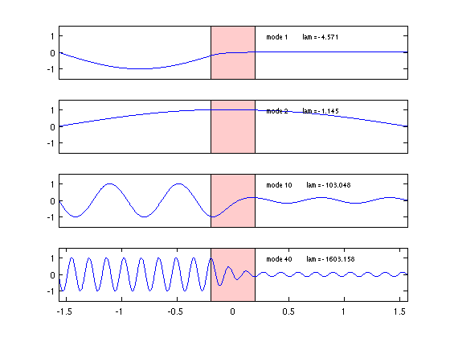

Wave equation with decay band
Nick Trefethen, November 2010
(Chebfun example ode-eig/WaveDecay.m)
Here are eigenmodes 1, 2, 10, 20 of the wave equation on [-pi/2,pi/2]:
LW = 'linewidth'; lw = 1.6; FS = 'fontsize'; fs = 8; L = chebop(-pi/2,pi/2); L.op = @(u) diff(u,2); L.bc = 'dirichlet'; nn = [1 2 10 20]; nmax = max(nn); [V,D] = eigs(L,nmax); for j = 1:4 n = nn(j); v = V(:,n); % pick out nth eigenvector v = v/norm(v,inf); % normalize to have amplitude 1 lam = D(n,n); % nth eigenvalue subplot(4,1,j) plot(v,LW,lw) axis([-pi/2 pi/2 -1.6 1.6]) if j < 4, set(gca,'xtick',[]), end text(.3,1.1,sprintf('mode %d lam = %6.3f',n,lam),FS,fs) end

Here are the same, but for the wave equation with a decay band:
figure a = 0.2; x = chebfun('x',[-pi/2 pi/2]); middle = (abs(x)<=a); L.op = @(x,u) diff(u,2) + (2/a)*middle.*diff(u); % decay band nn = [1 2 10 40]; nmax = max(nn); [V,D] = eigs(L,nmax); for j = 1:4 n = nn(j); v = V(:,n); % pick out nth eigenvector v = v/norm(v,inf); % normalize to have amplitude 1 lam = D(n,n); % nth eigenvalue subplot(4,1,j) hold off, fill(a*[-1 1 1 -1],1.6*[-1 -1 1 1],[1 .8 .8]) hold on, plot(v,LW,lw) axis([-pi/2 pi/2 -1.6 1.6]) if j < 4, set(gca,'xtick',[]), end text(.3,1,sprintf('mode %d lam = %6.3f',n,lam),FS,fs) end